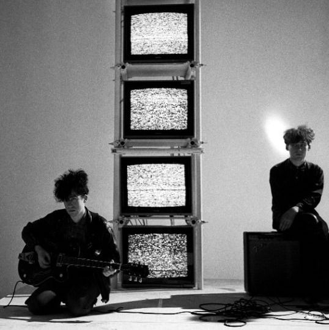

Influential artists and bands defining the alt-rock scene
The Doors by Art Kane, 1968Mazzy Star by Andrew CaitlinMy Bloody Valentine by Paul RiderSlowdive for their second album release, 'Souvlaki'

The Jesus and Mary ChainCocteau Twins for BBC Radio's John Peel Sessions, 1983Beach House by Mathieu Zazzo Broadcast via Warp